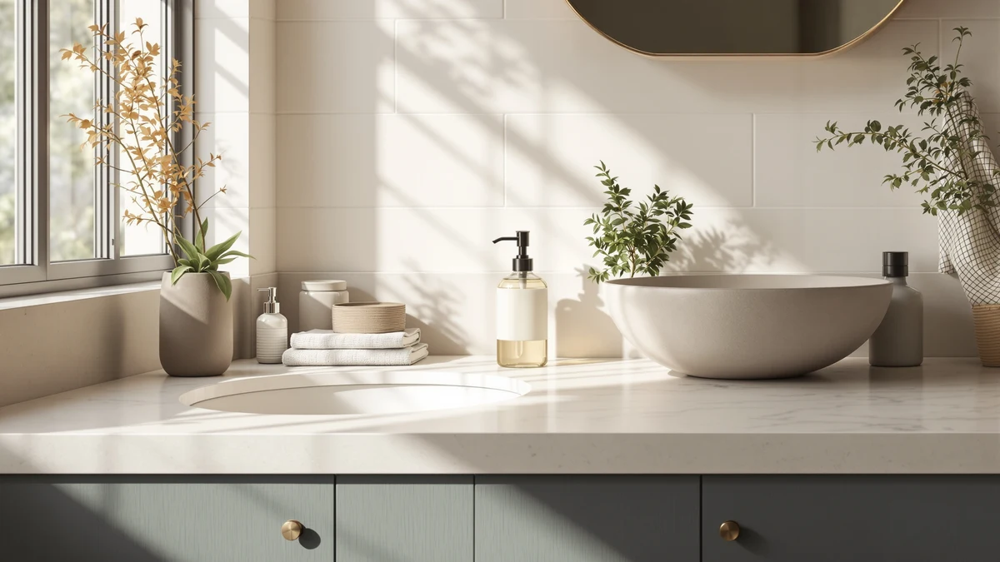

Best Hand Soap Dispensers for Bathroom (2026)
Prices and picks verified as of August 2026. Independent, reader-supported reviews.


Quick Answer
For most bathrooms, the PZOTRUF Automatic Soap Dispenser Touchless is the best hand soap dispenser for bathroom counters: a 500ml tank, an infrared sensor with five dispensing levels, and a price under $21. If you want a battery-only backup with no charging cable to manage, the Aunmaon at $14.99 is the better pick.
Our pick: PZOTRUF Automatic Soap Dispenser Touchless, $20.99 Check Price on Amazon
Bottom line: our top pick is the PZOTRUF Automatic Soap Dispenser at $21.99. The best budget option is the Automatic Soap Dispenser at $16.99.
Things to Know Before You Buy
- Our pick for most bathrooms is the PZOTRUF Automatic Soap Dispenser Touchless ($20.99). Its 500ml tank and five-level sensor cover a shared family bathroom without turning into a daily refill chore.
- Sensor range matters more than the spec sheet suggests. A dispenser that reacts within 0 to 2.7 inches works for a quick pass under the spout; anything shorter means you're hunting for the sweet spot every time you wash your hands.
- Battery type changes the maintenance routine. AA-powered models like the Aunmaon run up to a year per set, while USB-rechargeable models need a top-up every few weeks but skip disposable batteries entirely.
- Not every automatic pump likes foaming soap. Most of these dispensers are built for liquid hand soap and dish soap; thick or heavily foaming formulas can clog a pump that wasn't designed for them.
- A waterproof rating is worth checking for a sink-side spot. Bathroom counters splash more than kitchen ones, and only some of these dispensers list an IPX rating for that exposure.
Picking the best hand soap dispensers for bathroom sinks comes down to a short list of practical questions: does the sensor recognize a wet hand from a normal distance, how often do you have to refill or recharge it, and does the pump hold up to daily use without dripping down the side of the tank. Most touchless dispensers look interchangeable in a listing photo, silver or black plastic with a small window on the front, but the differences show up once you compare tank size, sensor range, and how the battery or charging setup actually plays out over a few months.
We compared seven dispensers built for bathroom and kitchen sinks, all touchless or near-touchless, ranging from $14.99 to $23.74. Our top pick, the PZOTRUF Automatic Soap Dispenser Touchless, pairs a 500ml tank with five adjustable dispensing levels for $20.99, which covers a busy bathroom without a weekly refill. If you'd rather skip charging cables altogether, the Aunmaon runs on AA batteries for close to a year at a lower price, and the SVAVO wall-mount holds more soap than any dispenser here for households or guest bathrooms that see heavier traffic.
None of these are luxury dispensers, and none pretend to be. What separates a good one from an annoying one is consistency: a sensor that fires the same way every time, a pump that doesn't sputter halfway through a bottle, and a tank you can see through well enough to know when to refill it. That's what we weighed each pick against below.
Why You Should Trust Us
Best Soap Dispensers covers one specific corner of the bathroom and kitchen: the pumps and dispensers you touch every day, from wall-mount units to countertop bottles. This guide is written by Ilane Tall, our home and bath expert, who researches soap dispensers, faucets, and bathroom fixtures across the price range to find which ones hold up to daily use.
We don't run a paid testing lab and we don't own every dispenser in this article. We read the manufacturer specs, compare listed features like sensor range and battery type against what owners report after weeks or months of use, and flag where the marketing copy oversells. Our full research process is public if you want the details. When a listing's claims can't be checked against real specs, we say so instead of filling the gap with a guess.
How We Picked
We started with what a bathroom hand soap dispenser has to get right: a sensor that responds reliably within a few inches, enough tank capacity to go more than a couple of days between refills, and a housing that seals well enough to avoid leaks on a countertop. We ruled out dispensers with vague or missing volume specs and anything without a clear power source, whether that's batteries, USB charging, or both.
From there we split the field by how each one is powered and mounted. We kept battery-only models for buyers who want to avoid a charging routine entirely, USB-rechargeable models for anyone comfortable topping up every few weeks, and one wall-mounted, higher-capacity option for bathrooms that see more than one or two people a day. We also prioritized dispensers with an adjustable output, since a fixed single-pump volume tends to either waste soap or leave your hands under-lathered.
How We Compared
We didn't run these bathroom soap dispensers through a lab. Instead we compared the specs each brand publishes against how owners describe daily use: does the sensor range match what's advertised, does the pump keep dispensing evenly as the tank empties, and does the battery or charge estimate hold up over weeks instead of days.
For the touchless models, sensor distance and response time were the first filter, since a dispenser that needs your hand held an inch away is more annoying to use than a manual pump. From there we weighed tank size against household size, since a 380ml tank that's plenty for one person runs dry fast in a family bathroom. We also checked whether each dispenser is listed as compatible with thick soap, thin soap, or both, since a pump built for one can clog or under-dispense with the other. Prices reflect what was listed when we wrote this guide; check the current price before you buy, since Amazon pricing shifts.
Our Picks

PZOTRUF Automatic Soap Dispenser Touchless
What we like
- 500ml tank holds more soap than most dispensers in this price range
- Five dispensing levels let you dial in the exact amount per pump
- Transparent window makes the refill point obvious at a glance
- Infrared sensor covers 0 to 2.36 inches, close enough for a natural hand pass
Flaws but not dealbreakers
- Sensor is tuned for hands and light-colored objects, so it can miss darker skin tones or gloves in low light
- Runs on batteries rather than USB charging, so you'll want spares on hand
| Material | ABS plastic |
| Size | — |
The PZOTRUF earns the top spot in this guide mainly on capacity. A 17oz/500ml tank is on the larger end for a countertop dispenser, which matters in a bathroom two or three people use every morning. The wide opening also makes it easy to refill without spilling down the side, and the clear window means you're not guessing when it's time to top it off.
The five-level output adjustment is the other reason it's our pick over similarly priced options. You set it once with the plus and minus buttons and it holds that volume until you change it, so a household with both adults and kids can dial in more or less soap per person without wasting product. Owners report the no-drip spout does what it claims, keeping the base of the dispenser cleaner than pump-style bottles that tend to weep soap onto the counter.

Aunmaon Automatic Soap Dispenser Touchless
What we like
- Lowest price of any dispenser in this guide
- 3 AA batteries are rated for up to a year of use before a swap
- 15-level knob adjustment holds a consistent volume until you turn it again
- Listed as compatible with both thick and thin soap without dilution
Flaws but not dealbreakers
- No USB charging option, so you're committed to AA batteries long-term
- Tank size isn't listed, so it's harder to judge refill frequency ahead of time
| Material | ABS plastic |
| Size | — |
The Aunmaon is the pick for anyone who'd rather not think about a soap dispenser at all once it's installed. Three AA batteries carry it for close to a year of normal household use, according to the listing, which means you set it and largely forget it. The 15-level knob on top is a physical dial rather than a button sequence, so adjusting the output doesn't require remembering a setting from last time.
It's also one of the few dispensers here explicitly built to handle both thick and thin liquid soap without dilution, which matters if your household switches between a runny hand soap and a thicker gel formula. The trade-off for the lower price is that you're locked into batteries instead of a rechargeable pack, so if you'd rather avoid buying AAs on a schedule, one of the USB-rechargeable picks below is the better fit.

Automatic Soap Dispenser Hand Soap
What we like
- 0.25-second sensor response is among the fastest specs in this guide
- USB-C charging with a 1200mAh battery, rated for a full charge in about 3 hours
- 6-level adjustment for finer control over output than a 3 or 5-level dispenser
- Works either wall-mounted or as a countertop unit
Flaws but not dealbreakers
- 380ml tank is on the smaller side for a household of more than two or three
- Rechargeable battery means an occasional charging cycle instead of a once-a-year swap
| Material | ABS plastic |
| Size | — |
This dispenser, sold under the Rudnia brand, is built around speed. A 0.25-second sensor response is faster on paper than most of the competition, which matters more than it sounds like it should when you're standing at the sink with soapy hands already dripping. The 6-level adjustment gives finer control than the 3-level dispensers in this guide, useful for a household where kids and adults want different amounts per pump.
The USB-C rechargeable battery is rated for up to 5,000 dispensing cycles per full charge, which the brand says takes about 3 hours. That's a reasonable trade for not buying batteries, though it does mean building a charging habit into your routine instead of an annual battery swap. At 12.8oz/380ml, the tank is smaller than our top pick, so it's a better match for a single-person or two-person bathroom than a busy family one.

Seawah Automatic Soap Dispenser Touchless(Upgrade
What we like
- IPX7 waterproof rating, the highest listed of any dispenser here
- Switches between touchless auto mode and a high-volume manual mode
- Pump is built to run quietly rather than with an audible motor sound
- Rechargeable battery rated for around 200 days per charge
Flaws but not dealbreakers
- Only 3 adjustable levels in auto mode, fewer than the Rudnia or OHIFAST picks
- Priced higher than the Aunmaon and the Rudnia without a larger tank to show for it
| Material | ABS plastic |
| Size | — |
The Seawah stands out on two specs: its IPX7 waterproof rating and the option to switch into manual mode. A bathroom sink sees more splashing than a kitchen counter, so a higher water-resistance rating is a real advantage over dispensers that don't list one at all. Manual mode is a useful fallback too, letting you push out a larger dose by hand for a deep clean instead of waiting on repeated sensor triggers.
Brand listing describes the pump as upgraded for quiet operation, a detail that matters if your bathroom is next to a bedroom and the dispenser gets used late at night or early morning. The rechargeable phone-grade battery is rated for roughly 200 days per charge, among the longer intervals of the rechargeable dispensers in this guide. The main compromise is the auto mode's 3-level adjustment, which offers less granular control than the Rudnia's 6 levels.

SVAVO Automatic Soap Dispenser Hand
What we like
- 600ml/21fl.oz tank is the largest capacity in this guide
- 0.2-second sensor response, the fastest listed spec here
- Non-drip valve cuts off soap flow completely after each pump
- Rated for commercial settings, so it's built for more frequent use than a typical home dispenser
Flaws but not dealbreakers
- Most expensive dispenser in this guide at $23.74
- Wall mounting means drilling into tile or a wall stud, which renters may want to avoid
| Material | ABS plastic |
| Size | 600ml |
The SVAVO is the outlier in this guide because it's built more like a commercial fixture than a countertop accessory. A 600ml tank holds well over a pint of soap, roughly 60% more than our 380ml picks, which means fewer refills in a bathroom that multiple people use every day. The listing markets it for offices, hotels, and restaurants as much as homes, and the wall-mounted design and non-drip valve back that up.
At $23.74 it's the priciest dispenser in this guide, and the wall mount is a bigger commitment than a countertop unit you can move or replace easily. But for a guest bathroom, a large family bathroom, or any sink where the dispenser runs dry weekly, the extra tank capacity offsets the higher price over time. The 0.2-second sensor response also means less lag between reaching under the spout and soap actually coming out.

OHIFAST Automatic Liquid Soap Dispenser
What we like
- Cheapest USB-rechargeable dispenser in this guide at $15.99
- 6-level adjustment plus a 10-second continuous flow mode for cleaning tasks
- IPX5 waterproof rating suits a splash-prone counter
- 0.25-second sensor response from 0 to 2.7 inches
Flaws but not dealbreakers
- The listing notes an audible pumping sound during operation, which the brand says is normal motor noise, not a defect
- Only available in white, so it won't match a black fixture set
| Material | ABS plastic |
| Size | — |
This OHIFAST dispenser undercuts the other USB-rechargeable picks in this guide on price without giving up much on features. It carries the same 12.8oz/380ml tank and 6-level adjustment as the Rudnia, plus a 10-second continuous flow setting the Rudnia doesn't list, useful when you want a bigger dose for scrubbing rather than a quick hand wash.
The IPX5 waterproof rating is a genuine advantage for a sink that gets splashed regularly, though the brand is specific that the sensor and charging port need to stay dry, which means wiping the unit down rather than letting water pool around it. One quirk worth knowing ahead of time: the listing itself flags an audible pump sound during dispensing as normal operation, not a malfunction.

OHIFAST Automatic Liquid Soap Dispenser
What we like
- Listed as compatible with both thick and thin dish soap, unlike its white counterpart
- Same 6-level adjustment and 10-second continuous flow mode as the white version
- IPX5 waterproof rating for use near a wet sink
- Black finish matches darker bathroom or kitchen hardware
Flaws but not dealbreakers
- $1 more than the white OHIFAST for essentially the same core hardware
- 380ml tank is modest next to the SVAVO's 600ml capacity
| Material | ABS plastic |
| Size | — |
This is the black version of the OHIFAST dispenser above, and the listing specifically calls out compatibility with thick and thin dish soap, a detail the white model's listing doesn't mention. If your household alternates between a runny hand soap and a thicker dish soap at the same sink, that's a meaningful edge over an otherwise nearly identical dispenser.
Everything else carries over from its sibling: the same 380ml tank, the same 6-level adjustment, the same IPX5 rating and USB-C charging. The main reason to choose this one over the white version comes down to your bathroom's color scheme and whether soap thickness compatibility matters to you, since the price difference between the two is a single dollar.
Quick Comparison
| Product | Material | Price | Rating | Best for | Get it |
|---|---|---|---|---|---|
| PZOTRUF Automatic Soap Dispenser Touchless | ABS plastic | $20.99 | 4 | Best overall bathroom hand soap dispenser | View on Amazon → |
| Aunmaon Automatic Soap Dispenser Touchless | ABS plastic | $14.99 | 4 | Best budget, battery-only pick | View on Amazon → |
| Automatic Soap Dispenser Hand Soap | ABS plastic | $16.99 | 4 | Best for a fast sensor and USB charging | View on Amazon → |
| Seawah Automatic Soap Dispenser Touchless(Upgrade | ABS plastic | $18.99 | 4 | Best for splash-prone bathroom counters | View on Amazon → |
| SVAVO Automatic Soap Dispenser Hand | ABS plastic | $23.74 | 4 | Best for guest and high-traffic bathrooms | View on Amazon → |
| OHIFAST Automatic Liquid Soap Dispenser | ABS plastic | $15.99 | 4 | Best budget USB-rechargeable pick | View on Amazon → |
| OHIFAST Automatic Liquid Soap Dispenser | ABS plastic | $16.99 | 4 | Best for thick and thin soap in one dispenser | View on Amazon → |
Are touchless soap dispensers worth it for a bathroom sink?
For a bathroom sink, yes, more than in a kitchen.
How long do batteries last in an automatic soap dispenser?
It depends on the power source.
The Competition
Every dispenser in this guide earned its spot, but a few only make sense in specific bathrooms rather than as a default choice.
The two OHIFAST Automatic Liquid Soap Dispensers ($15.99 and $16.99) are close to interchangeable outside of color and the black version's listed compatibility with thicker soap. If neither of those details matters to you, buy whichever color fits your bathroom and save the dollar.
The SVAVO Automatic Soap Dispenser Hand ($23.74) is the largest and most capable dispenser here, but its wall-mounted design and higher price only pay off in a bathroom with heavy daily use, like a guest bath or a larger household. For a single-person or two-person bathroom, that extra capacity mostly goes unused.
The Seawah Automatic Soap Dispenser Touchless ($18.99) costs more than the Aunmaon and the Rudnia without a bigger tank to justify it, and its main advantages, the IPX7 rating and manual mode, matter most if your counter gets splashed often or you want a manual backup. If neither applies, one of the cheaper picks does the same core job.
Taken together, these seven cover most bathroom setups, and the PZOTRUF Automatic Soap Dispenser Touchless remains the pick we'd point most people toward first among the best hand soap dispensers for bathroom counters we compared.
Frequently Asked Questions
Are touchless soap dispensers worth it for a bathroom sink?
For a bathroom sink, yes, more than in a kitchen. You touch a bathroom soap dispenser right after handling things you're trying to wash off, so a sensor pump keeps the housing itself clean instead of building up the grime a manual pump collects. The trade-off is upkeep: you're charging a battery or swapping AAs instead of pressing a lever, and a touchless model costs more upfront than a basic manual pump.
How long do batteries last in an automatic soap dispenser?
It depends on the power source. Dispensers running on AA batteries, like the Aunmaon in this guide, are rated for close to a year of typical household use. USB-rechargeable models with a built-in lithium battery, like the Rudnia and the two OHIFAST picks, tend to need a top-up every few weeks to a couple of months depending on how many times a day the sensor fires. The Seawah's phone-grade battery is the outlier here, rated for around 200 days per charge.
Can automatic soap dispensers handle thick or foaming soap?
Most of the pumps in this guide are built for liquid hand soap and dish soap rather than foaming formulas, and several listings specifically note compatibility with both thick and thin liquids, including the Aunmaon and the Seawah. Foaming soap has air whipped into it, which can make an automatic pump sputter or clog over time. If you're committed to foaming soap, dilute it with a little water before refilling, or stick with a dispenser marketed specifically as a foam pump.